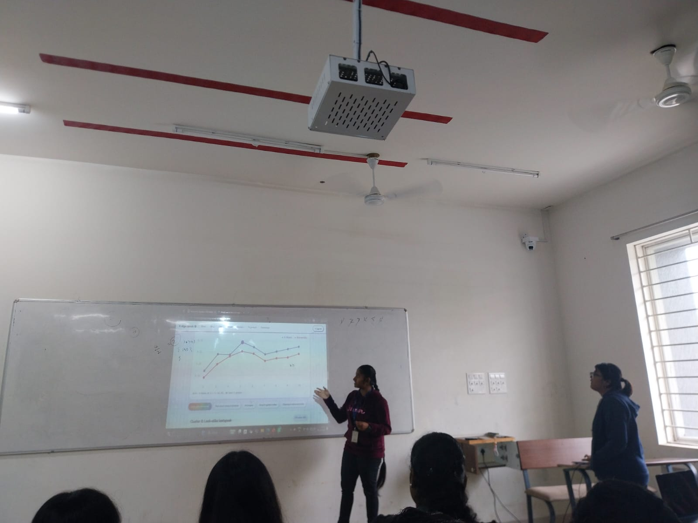

🎀 Motivation
The increasing use of social media content moderation encourages users to modify words using coded expressions, emojis, abbreviations, and spelling variations. This project aims to computationally analyze these evolving expressions and identify their linguistic formation patterns.
🔍 Existing Gap
Existing studies mainly focus on qualitative analysis, user motivations, and algospeak decoding using predefined categories or Large Language Models. There is limited exploration of unsupervised clustering based on multiple linguistic features.
This motivated the development of a system that automatically categorizes algospeak expressions and supports interactive exploration.
🏗️ Architecture
💻 Complete Tech Stack
| Component | Technology |
|---|---|
| Programming Language | Python |
| NLP | NLTK, Linguistic Feature Extraction |
| Data Processing | Pandas, NumPy |
| Machine Learning | Scikit-learn |
| Dimensionality Reduction | PCA |
| Clustering | K-Means, Hierarchical Clustering |
| Evaluation | Elbow Method, Silhouette Score |
| Visualization | Matplotlib, Seaborn |
| Frontend | HTML, CSS, JavaScript |
| Website | Interactive Algospeak Decoding Interface |
📊 Dataset Used
Dataset: Algospeak Dataset from Zenodo
Source: TikTok
Size: 550 algospeak expressions
Collection Period: March 2023 – August 2024
Data: Algospeak expressions and decoded meanings
View Dataset ↗🧠 NLP Pipeline
Raw Dataset
Collect algospeak expressions and their decoded meanings.
Text Preprocessing
Preprocess and normalize the expressions.
Linguistic Feature Extraction
Extract 14 linguistic features covering orthographic, phonetic, morphological, and semantic characteristics.
Feature Scaling and PCA
Scale the features and reduce dimensionality using PCA.
K-Means Clustering
Group expressions into five clusters.
Evaluation
Evaluate clustering using the Elbow Method and Silhouette Score.
Visualization and Interactive Decoding
Visualize cluster patterns and explore decoded expressions through the website.
👩🏻💻 Users, Inputs and Outputs
| Component | Description |
|---|---|
| Users | Researchers, students, social media users, NLP enthusiasts |
| Input | Algospeak words, phrases, symbols, abbreviations, emojis |
| Input Format | Text strings entered through the website |
| Dataset Input | CSV containing expressions and decoded meanings |
| Processing | Feature extraction, normalization, PCA, clustering |
| Output | Decoded meaning, linguistic category, cluster assignment |
| Visualization | Cluster distributions and linguistic pattern charts |
📁 Project Files
Explore the implementation notebook and project presentation.
📸 Demo Gallery
Snapshots from the project implementation and website demo.




🎬 Project Demo
Download the video demonstration of the Algospeak Evolution Engine.
🌷 References
- Klug et al. (2023) – How Algorithm Awareness Impacts Algospeak Use on TikTok.
- Steen et al. (2023) – You Can (Not) Say What You Want.
- Cho and Kim (2021) – Google-trickers, Yaminjeongeum, and Leetspeak.
- Fillies and Paschke (2024) – Simple LLM-Based Approach to Counter Algospeak.
- Hu et al. (2024) – Uncovering and Mitigating the Hidden Chasm.
- Ungless et al. (2025) – Le$bean or Lesbian?
- Parnell (2023) – Algospeak and Algo-Design in Platformed Book Publishing.
- Pateda et al. (2025) – Algospeak: The Evolution of Language in the Age of Social Media in Indonesia.
- Blažević and Žuvela Blažević (2025) – Insights into Algospeak and Sensitive Language on TikTok.
- Zenodo – Algospeak Dataset.